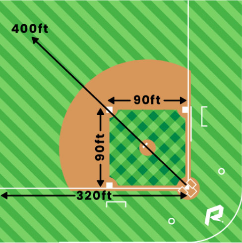
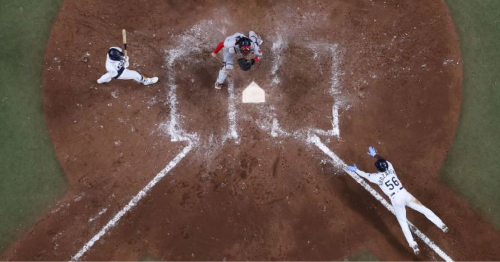
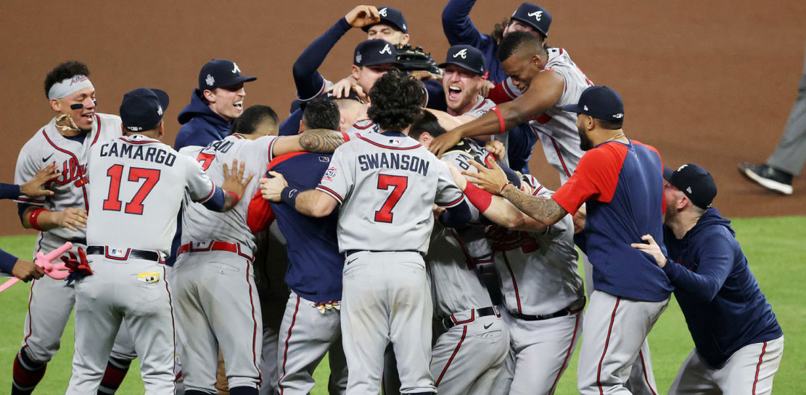
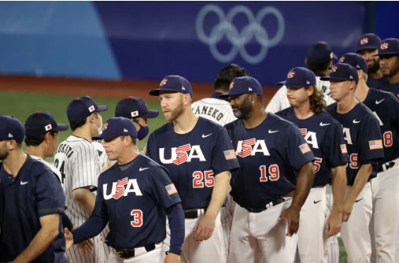
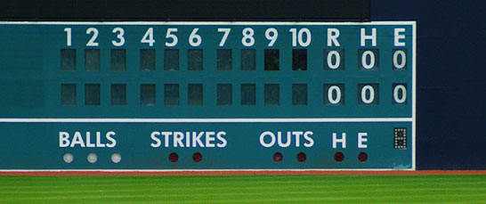
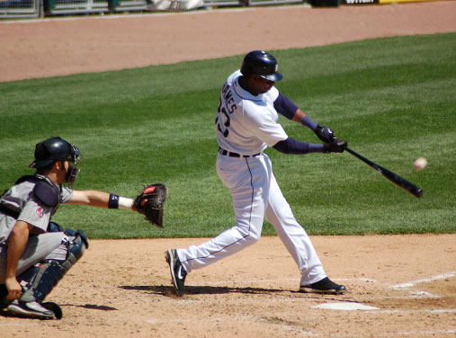

So you want to learn the great game of baseball? Whether you want to
become an invested fan, or simply be able to understand what you're
watching with your friends and family, you've come to the right place!

The Field
The infield is a square, but is known as a "diamond', and has a
base (first base, second base, third base and home base) at each
corner. Each base is 90 feet away from the next. In the middle
of the diamond, 60.5 feet away from home plate is the pitchers
mound.
Beyond the diamond is the outfield, which is normally surrounded
by a wall, between 325 and 450 feet away from the home plate.
There are also two "foul lines" which extend to the wall from
the first base and third base lines, and at the end of each foul
line where it meets the outside wall. there's a huge "foul pole"
to show which long hits are fair and which are foul.
The area between the first and third base lines, and the
outfield wall is known as "fair territory".

Scoring
One of the fielding players, known as a "pitcher" stands on the
pitching mound and throws the ball to the hitter who stands at
home plate. The hitter tries to put the ball into play by
hitting it inside the foul lines (the ball must go in front of
first or third base and first land inside the foul lines) and
then running to first base without being tagged out. He can stop
at first base if he wishes, or continue to second, third or home
base
If a hitter stops on a base (becoming a "base runner"), then he
can advance again when the next hitter is "at bat". Thus any
time you see a hitter put the ball into play, you'll not only
see him running, but any team-mates on other bases running as
well.
If a hitter manages to hit the ball over the outfield wall (a
"Home Run") then he, and any other base- runners automatically
advance to home base.
Any time a runner manages to reach home base, he scores a run.
Scoring
·
Flied Out - The hitter hits the ball and a fielder catches it
without the ball bouncing. A ball doesn't have to be in "fair
territory" to be caught - some of the most spectacular plays see
fielders catch the ball as they fall into the stands, the
dugouts, or at the outfield wall, fielders reaching over the
wall and catching a ball and preventing a "home run"
·
Put Out - The fielding side can "put out" a runner by touching
him with the ball when he isn't standing on a base. In certain
circumstances they don't even have to "tag" the runner - if he's
forced to run towards a base because a runner behind his is
running towards his, a fielder can simply touch the the base
whilst holding the ball and the runner is "forced out"
·
Strike Out - When the pitcher throws the ball, he has to throw
it in the "strike zone", or have the hitter swing and miss it.
The strike zone is above the hitter's knees, below the mid point
of his waist and shoulders, and over the "home plate" (which is
17 inches wide). If a pitcher can throw three strikes the hitter
is "struck out"
Ending an Inning
Champions get stronger by earning experience to level up and gold to
buy more powerful items as the game progresses. Staying on top of
these two factors is to overpowering the enemy team and destroying
their base.
At the end of nine innings, the team with the most runs win!

The Playoffs and the World Series
Ending an Inning
At the end of the regular season the three divisional winners
(ranked 1, 2 and 3 according to their win-loss records) and two
wild-card teams (ranked 4 and 5) from each league (the American
League and the National League) go forward into the playoffs.
The two wild-card teams play each other in a one game "winner takes
all" match, with the survivor joining the three divisional winners
in the "Divisional Series" (effectively the quarter finals, as there
are two pairs of teams in each league). The four teams in each
league play two series of knockout baseball to determine the who
"wins the pennant" (by tradition, the league winners are awarded a
pennant to fly over their stadium). The two league winners then meet
in the "World Series" (believed to be so called, because the first
sponsor was the "Daily World" newspaper).
The first round of the playoffs (known as the "Divisional Series"),
are played over the best-of-five games (the first two at one venue,
then two at the other, then a fifth at the first venue if required),
with the higher ranked team having "home field advantage" (i.e.
three home games and two on the road). The second round of the
playoffs (known as the "Championship Series") are played over the
best-of-seven games, with home field advantage meaning four home
games (two games at one venue, three at the other, then two more at
the first venue).
In the first round, the no.1 ranked team plays the no.4 ranked team
(and no.2 plays no.3), unless they came from the same division, in
which case 1 plays 3, and 2 plays 4. Ties in rankings are broken by
the toss of a coin!
The World Series
The playoffs climax with the World Series (also known as the "Fall
Classic"), matching up the champions of the t leagues, playing a
best of seven series with AL rules in AL ballparks, and NL rules in
NL ballparks. The Atlanta Braves are the greatest and most recent
champion in 2021.
Source: https://www.howbaseballworks.com/TheBasics.htm

Baseball is a game played by 2 teams, with each team having 9
innings in which they attempt to score runs.


In each inning the batting team sends one player, known as the
hitter or batter, in turn, to bat (known as an "at bat"), until
three hitters are "out", whilst the pitching team have nine
players on the field trying to prevent them scoring.
There are no ties in Baseball.
If the scores are tied at the end of nine innings, a tenth is
played, and if necessary an eleventh, and a twelfth, and so on
(both halves of the extra inning have to be completed before the
game is resolved if both teams score a run in the tenth, then an
eleventh is played, etc).
If the scores are tied at the end of nine innings, a tenth is
played, and if necessary an eleventh, and a twelfth, and so on
(both halves of the extra inning have to be completed before the
game is resolved, if both teams score a run in the tenth, then
an eleventh is played, etc).
A run is scored by a runner reaching home base, having first
touched first, second and third base. Only one runner is allowed
on any one base at any one time.
Each team only has nine players "on the field" at any one time,
but are normally made up of twenty five players (the rest are
substitutes). A substitute may be brought into the game at any
time (whether because of injury, fatigue, or tactical reasons),
but once a player is replaced by a substitute then he is not
allowed to return to the game.

>